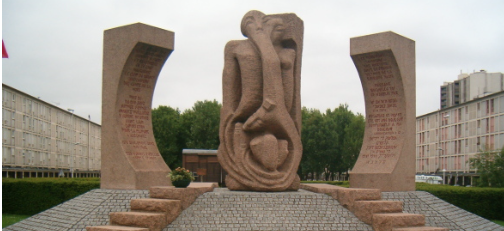

In order to better understand the context of the personal stories collected on this site, we have selected a series of articles from the Mémorial de la Shoah, Yad Vashem and MV&R. The MV&R is an online scientific publication specializing in the study of massacres, genocides, and the local resistance they generate, and whose goal is to provide reliable information on events that are sometimes difficult to document and that remain deeply rooted in individual and collective memories. It relies on an interdisciplinary academic network based in Paris at the Centre de Recherches Internationales (CERI) and the Centre d'histoire de l'Institut Politique, also known as Sciences Po.
The Holocaust in France
From the Yad Vashem website

Chronology of Repression and Persecution in Occupied France, 1940-44
From Sciences Po.

The Drancy Camp
From Sciences Po. By Laffitte Michel
The Vélodrome d'hiver Round-up: July 16 & 17, 1942
From Sciences Po. By Laffitte Michel
Key Dates of the Holocaust
From Mémorial de la Shoah. In French.